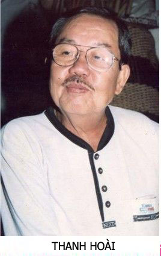

HỀ THANH VIỆT
Trong những thập niên 60, 70, 80, Hề Thanh Việt tuy không mang danh hiệu “Trạng Hề”, hay “Quái Kiệt “, hay” Danh Hề “, nhưng trên bất cứ sân khấu nào có mặt hề Thanh Việt diễn thì dường như khán giả đã quên mất những danh hề, quái kiệt hay các trạng hề khác. Khán giả hoàn toàn hài lòng với tài chọc cười nhẹ nhàng và tế nhị của Thanh Việt. Họ yêu mến Thanh Việt và thân mật gọi Thanh Việt bằng hai tiếng: Hề Râu chỉ vì cái bộ râu “quặp” độc đáo của Thanh Việt.
Thanh Việt sanh năm 1939, ở Hốc Môn.
Người ta nghe danh Thanh Việt khoảng năm 1955, 1956, khi các chương trình ca tân nhạc ở các rạp hát bóng Việt Long (đường Cao Thắng ) và rạp Văn Cầm (đường qua cầu Chữ Y) được khán giả ưa thích.
Thời gian này cũng là thời gian mà các ca sĩ như Ngọc Cẩm, Nguyễn Hữu Thiết, Trần Văn Trạch, ban hợp ca Thăng Long, ban vũ Trịnh Toàn và nhiều nữ danh ca tân nhạc mở màn cho loại hình sân khấu “Đại nhạc Hội”, góp phần cho sinh hoạt văn nghệ trình diễn ở Sài Gòn ngày thêm phong phú.
Thanh Việt có một người em ruột tên Thanh Sơn, cũng ca tân nhạc, diễn hài nhưng không gặt hái được sự thành công đáng kể nào. Thanh Sơn chuyển qua làm chuyên viên ánh sáng, phụ trách dàn đèn cho sân khấu tân nhạc.
Cả hai anh em Thanh Việt khi gia nhập quân đội Cộng Hòa, đều phục vụ trong tiểu đoàn 40 Chiến tranh Chính trị, dưới quyền điều khiển của thiếu Tá Sinh.
Khi Bộ Tổng Tham Mưu thành lập đoàn Hoa Tình Thương, Thiếu Tá Sinh được thuyên chuyển qua làm chỉ huy trưởng đoàn này thì Thanh Việt, Khả Năng, Phi Thoàn đều được điều động về đơn vị này.
 .
.
Tôi không nhớ rõ trường hợp nào Thanh Việt gia nhập “Làng Hề”, nguyên do là vì anh khởi nghiệp trong giới “Tân Nhạc”, còn tôi thì trụ trì bên giới cải lương. Cơ duyên đưa đến cho tôi có nhiều dịp viết và tập cho Thanh Việt diễn hài kịch là lúc đoàn cải lương Thanh Minh-Thanh Nga hát thường trực tại rạp Thành Xương, sau đó ở các rạp Nguyễn văn Hảo, Hưng Đạo và Quốc Thanh, Hề Tùng Lâm thường mướn các rạp hát đó đế diễn xuất ban ngày, xuất 9 giờ sáng: Chương Trình Cù Lét.
Tùng Lâm thường nhờ tôi viết hài kịch cho những chương trình “Cù Lét” này. Đó là những năm từ 1960 đến 1966.
Lúc đó Chương trình “Cù Lét” của Tùng Lâm có tới 6 danh hề tân nhạc: Tùng Lâm, Xuân Phát, Khả Năng, Phi Thoàn, Thanh Việt, Thanh Hoài. Về sau có thêm một tay hài nữa tên Tùng Phèn, đệ tử của Tùng Lâm, nhưng Tùng Phèn chỉ có mặt trong một vài chương trình rồi anh biệt tích giang hồ.
Viết hài kịch cho 6 diễn viên hài, người nào cũng phải có chỗ diễn, người nào cũng phải có “ga” để làm bật tung lên những trận cười của khán giả, đó là một chuyện không phải dễ. Và mỗi vai hề phải có một lối chọc cười khác nhau; tuy khác nhau nhưng phải rập ràng, kẻ tung người hứng, phát triển theo cốt chuyện kịch, chớ không phải tùy tiện theo lối hề diễu rẻ tiền, mạnh ai nấy diễn.
Do yêu cầu nghệ thuật diễn hài kể trên, tôi phải nghiên cứu khả năng chọc cười của từng diễn viên để có cách khai thác khác nhau.
Ví dụ Phi Thoàn diễu thì phải nói nhanh, nói đủ thứ chuyện, chọc cười khán giả bằng điệu bộ lăng xăng, nói tía lia, méo mặt, méo mày, đưa tay giả làm lược vuốt tóc, v..v…
Khả Năng thì diễu “tỉnh”, nói năng chậm rãi và biết nhấn mạnh “từ” nào có thể chọc cười khán giả. Khả Năng “to con lớn xác”, nhưng có vẻ khù khờ, ngờ nghệch của một anh nông dân mới lên tỉnh thành. Phong cách đó trái ngược với phong cách của Phi Thoàn. Tôi viết cho hai anh Phi Thoàn – Khả Năng các lớp diễu đối chọi nhau như các cảnh diễn của hai danh hề quốc tế Laurel – Hardy, hai anh hề “Mập”, “Ốm”. Anh ốm (Laurel) thì lanh miệng, láu cá, khôn vặt, tìm cách hiếp đáp anh mập (Hardy). Anh mập ngu ngơ, khù khờ nhưng cuối cùng bao giờ cũng thắng…
Hai danh hề Tùng Lâm – Xuân Phát cũng có cá tánh và sắc vóc khác nhau, đối chọi nhau: Tùng Lâm lùn tịt, Xuân Phát cao lêu nghêu. Tùng Lâm lúc nào nói chuyện cũng có vẻ quạu quọ, như muốn gây lộn, cái mặt vác hất. Xuân Phát nói năng có vẻ trịnh trọng, cười luôn miệng, lúc đối thoại thì có vẻ chăm chú nhưng rồi không hiểu người ta nói gì. Xuân Phát gặp Tùng Lâm thì vồn vã, xum xoe, nhưng không hiểu, không nhớ những gì Tùng Lâm vừa nói nên khiến Tùng Lâm càng quạu quọ, càng trở nên lố bịch. Hai tính cách của hai vai trái ngược nhau, đối chọi nhau, tạo cười cho khán giả.
Đến Thanh Việt và Thanh Hoài, Thanh Hoài có bộ râu mép rất dầy, rất đậm, miệng cười toe toét, nói năng nhừa nhựa, người Bắc nhưng lại thích bắt chước nói giọng Nam, người nghe thấy ngây ngô, tức cười.
Thanh Việt cũng có bộ râu mép rất dầy, rất đậm, cộng thêm bộ râu “quặp” dưới cằm. Thanh Việt có tài làm cho bộ râu nhúc nhích, hoạt động, phối hợp với vẻ mặt diễn tả sự vui, buồn một cách rất hài hước. Chỉ cần nhìn bộ râu của Thanh Việt hoạt động, người ta cũng có thể cười được thoải mái. Cặp mắt của Thanh Việt khi nheo lại ngó ai cũng gợi cho người ta một niềm vui. Giọng nói của Thanh Việt cũng dễ gây cảm tình đối với người nghe.
Tôi nghĩ có lẽ đây là cái duyên trời cho, cái tài chọc cười thiên phú. Tôi từng làm việc chung với Thanh Việt trong nhiều đoàn hát, trong các phim trường, trong các đại nhạc hội hay thu băng, thu hình, tôi tìm hiểu khả năng “hài” của Thanh Việt thì tôi nhận thấy ngoài “cái duyên hài” trời cho, Thanh Việt còn khả năng bắt chước rất tài: bắt chước điệu bộ, nhại giọng nói, và có nhiều sáng tạo bất ngờ.

Tôi còn nhớ cuối năm 1963, thời cuộc ở Sài Gòn có nhiều biến động, lịnh giới nghiêm được ban hành, giới sân khấu cổ nhạc, tân nhạc đều điêu đứng vì không hát được xuất tối, phải chuyển qua hình thức “hát hội”, tập trung nhiều tài danh nghệ sĩ, nhiều tiết mục để câu khách.
Đoàn Thanh Minh-Thanh Nga hát ở rạp Hào Huê, tuồng Đoạn Tuyệt của Duy Lân. Màn đầu có tăng cường ca tân nhạc và một hài kịch ngắn: “Chàng rể hào hoa“, có hề Thanh Việt, Khả Năng, Phi Thoàn, Thành Được và Thanh Nga.
Đến tuồng Đoạn Tuyệt thì có trở ngại bất ngờ là Hề Minh, hề của gánh hát Hương Mùa Thu, vì say rượu, té xe Honda trên đường tới rạp hát nên bà Bầu Thơ phải kiếm người đóng vai thầy pháp thế cho Hề Minh.
Bà Năm Sa Đéc thủ vai bà phán Lợi đề nghị Thanh Việt thế vai thầy pháp và gợi ý nếu Thanh Việt quên thì bà ở kề cận, nhắc tuồng hay hát cương cho qua lớp đó. Miễn là có thầy pháp, hát vài câu, “kêu linh gọi hồn” là xong.
Thanh Việt xưa nay chưa hề đóng vai thầy pháp, không biết câu hát “kêu linh gọi hồn” thành ra tôi là soạn giả thường trực của đoàn hát, tôi phải cấp tốc viết mấy câu cho Thanh Việt học để lát nữa hát. Tôi ngồi gần bàn làm tuồng của Thanh Nga, hí hoáy, viết; Thanh Việt vừa vẽ mặt thầy pháp, vừa học theo từng câu.
Tôi nói:
– Một lát ra sân khấu, mầy vẽ bùa, bắt ấn quyết; khi “hô linh”, mầy nói hỡi hỡi … âm binh thần tướng thì xê tới gần cánh gà, tao nhắc câu nào, mầy hát câu nấy, chớ học bây giờ, sao mà thuộc được?.”
Thanh Việt nói:
– Ông thầy ráng ủng hộ tui nghe, xong xuất hát nầy, thầy trò mình đi nhậu.
Bà Năm Sa Đéc nghe, vừa cười vừa nói: “Ê! Mời ông thầy đi nhậu mà quên tui thì một lát tui cũng quên bạn thì đừng có trách nghen! ”
Thanh Việt bước lại, bóp bóp vai bà Năm Sa Đéc, nói: ” Tội nghiệp con mà Má! Con mua trầu cho Má xơi được hông?”
Ngoài sân khấu, tuồng diễn đến lớp Loan (Thanh Nga) bồng đứa con bị bịnh, đi khám bác sĩ về. Bà Năm Sa Đéc trong vai bà phán Lợi, mẹ chồng bước ra đay nghiến, đòi kêu thầy pháp trị bịnh tà cho cháu nội chớ không cho uống thuốc tây, không cho đi khám bác sĩ. Ngọc Nuôi trong vai Bích, cô em chồng đanh đá, dẫn ông thầy pháp (Thanh Việt ) vô, nói:
– Má, con rước ông thầy pháp ở xóm Sáu Lèo tới. Ống nổi tiếng bắt ma, trừ tà, trục hồn, trị bịnh giỏi nhứt ở núi Tà Lơn mới tới đó, má.
Bà Năm Sa Đéc nói mở đường cho thầy pháp Thanh Việt:
– Nè, ông thầy cứ thắp nhang khấn vái, đăng đàn gọi hồn nhập xác, cứ lấy khăn ấn nẹt nẹt vô mình của cháu nội tôi là nó hết bịnh liền. Khỏi phải vẽ bùa, đọc chú chi cho khan tiếng, nghe ông thầy.
Thanh Việt mừng quá, xá xá bà Năm, nói:
– Dạ, tôi làm gấp gấp, lãnh cachet rồi chạy chầu đám khác.
Khán giả nghe thầy pháp nói lãnh cachet, cười rộ lên. Thanh Việt biết mình lỡ lời, làm tĩnh, cầm nắm nhang khói ngui ngút, vẽ bùa bốn phương tám hướng. Bà Năm Sa Đéc muốn trát Thanh Việt, bước ra sát mặt tiền sân khấu, hướng về khán giả như muốn nói phân bua:
– Ông thầy pháp nói lãnh cachet là lãnh cái chi, phải hỏi ổng cho rõ.
Rồi bà hỏi tới tấp:
– Ông thầy nói lãnh cachet là lãnh cái chi vậy hả, ông thầy?
Thanh Việt trong nhất thời chưa biết trả lời sao, thấy bà Năm xớ rớ theo mình, liền nẩy ra sáng kiến:
– Tôi nói nếu bác “Rảnh”, bác xê ra cho tôi cúng kiếng …Bác Rảnh bác xê ra, chớ ai nói lãnh cachet cái gì đâu?
Tôi đứng trong cánh gà, nhắc Thanh Việt: “Ám ma ni bát di hồng!”
Thanh Việt múa khăn ấn đỏ, nẹt nghe rẹt rẹt, rồi lớn tiếng xướng theo lời nhắc của tôi:
“Ám ma ni bát di hồng …
Cấp cấp triệu thỉnh âm binh thần tướng lai đáo…
La Đường La Sát bách vạn thiêng liêng,
Tiền sai lôi tướng, hậu khiển âm binh.
Thính lịnh ngã sai, trừ tà sát quỷ.
Là hỡi… hỡi âm binh ôi… “
Thay vì nói La Đường La Sát bách vạn thiêng liêng, Thanh Việt rống họng la lớn: Bà Năm Sa Đéc bá vạn âm binh …
Khán giả cười ào ào. Bà Năm Sa Đéc nổi khùng, la theo: “Ông thầy cúng cái gì kỳ vậy hả?”. Bà kéo áo ông thầy pháp Thanh Việt.
Thanh Việt la lớn: “Ế, Mâm bô, I ta li nha nô. Ế, Mâm bô “. Giàn tân nhạc dường như đã được Thanh Việt dặn dò trước, tấu một khúc nhạc mambo rất giựt gân. Thanh Việt múa khăn ấn đỏ của thầy pháp, bước nhún nhảy vòng quanh theo nhạc điệu mâm bô, miệng hát cũng nhịp nhàng như người cốt lên đồng:
Truyền chư vị chúng thần,
Tương hồn ma nhập phách,
Hoặc hồn ở đám lau bụi lách,
Hoặc hồn ở các sà nách ba,
Hay hồn tới xóm cây Da xà
Nghe thầy triệu, hồn mau nhập thể, hô nhập …hô nhập..
(nẹt khăn ấn )
Hỡi ơi…hỡi, âm binh thần tướng, hề tụ lãnh lương,
Kép mùi, kép chánh, tướng cạnh, tướng con,
Mợ chài, mợ quý, vũ nữ, vũ công, hề tụ lãnh lương,
Bà Năm Sa Đéc, cũng hề tụ lãnh lương… ơi hỡi …âm binh
Cấp cấp theo lịnh triệu.
(dùng khăn ấn đánh mạnh vào đứa nhỏ)
Khán giả cười ào ào vì Thanh Việt kêu réo mọi người trong gánh hát hề tụ lãnh lương. Anh ta cũng không quên nhắc Bà Năm Sa Đéc tụ lại lãnh lương. Thanh Việt bặm môi, vểnh râu cằm ra phía trước, dùng cặp chân mày và bộ râu gõ nhịp theo điệu nhạc mambo, khiến cho khán giả cười vỡ rạp.
Tuồng “Đoạn Tuyệt” là một vở Bi Kịch, đến lớp này biến thành Hài Kịch, khán giả ghét nhân vật bà mẹ chồng độc ác, ghét cô em chồng đanh đá nên khi ông thầy pháp tới gây rối, chọc tức hai nhân vật trên thì khán giả rất hài lòng, cười khoan khoái.
Bà Năm Sa Đéc không biết làm cách gì để kéo lại cái không khí gay cấn của gia đình giữa mẹ chồng và nàng dâu.
Ông thầy pháp Thanh Việt thấy khán giả cười, càng khoái chí, vễnh râu múa mambo.
Thời may Thanh Nga (vai Loan ) chạy ra, giọng thất thanh, thét lớn: “Trời ơi! Con tôi đã chết. Người ta đã giết con tôi “. Thanh Nga ôm xác đứa bé thơ, khóc rống và gào to: “Con ôi…Con đừng chết nghen con “.
Khán phòng bỗng lặng im, Thanh Việt rón rén lui vào hậu trường. Người ta không cười nữa, mà mọi người xúc động nghẹn ngào vì tiếng khóc con của một bà mẹ trẻ, bị cái gia đình phong kiến đẩy vào thảm cảnh đau thương.
Thanh Việt làm thầy pháp bất đắc dĩ nhưng thành công một cách quá sức tưởng tượng của mọi người trong đoàn hát, vậy nên về sau có vai thầy bói, thầy hù, thầy pháp, soạn giả nào cũng muốn giành vai đó cho Thanh Việt.